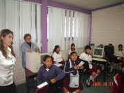
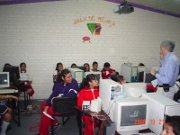
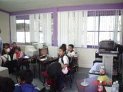

Colección de ideas.
2008-10-26 08:30 - guivaloz
  
El pasado 21 de octubre de 2008, impartí la plática Introducción al Software Libre ante alumnos de 5to. y 6to. de primaria. Los niños de esta generación muestran un mayor uso de las herramientas informáticas que las generaciones pasadas; sin embargo, para ellos fue la primera vez que escucharon hablar sobre Linux y Software Libre.
Su servidor, les explicó las cualidades del Software Libre, su filosofía y la gran fuente de conocimiento y aprendizaje que representa. Para entender la importancia del conocimiento libre, hicimos comparaciones simples, como el qué hubiera sido de los descubrimientos de Issac Newton si los hubiese patentado o si hubiera cobrado por hacer copias impresas de sus famosas leyes de la dinámica.
Para este público tan especial me fueron muy valiosas las animaciones de Guadalinex que con sus cortos animados nos ayudan a fácilmente entender la misión del Software Libre. Además cada alumno se llevó una copia de Ubuntu y la mayoría el add-on para volverlo Edubuntu.
Agradezco al Consejo Estatal de Ciencia y Tecnología (COECYT) su amable invitación a este evento educativo.